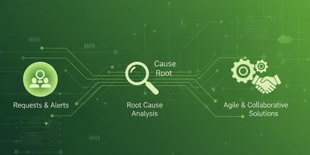

Automação de Health-Check
Criação de checklist automático com leitura de URLs de saúde dos servidores (HTML, CSS, JavaScript), integrando front e back-end para monitoramento contínuo.
Resultados, inovação e impacto real em tecnologia
Este portfólio reúne as principais conquistas na área de TI, com foco em automação, qualidade, arquitetura de sistemas e entregas de alto impacto. Cada card abaixo traz uma foto e um breve resumo do que foi realizado.
Criação de checklist automático com leitura de URLs de saúde dos servidores (HTML, CSS, JavaScript), integrando front e back-end para monitoramento contínuo.
Criação de páginas web alinhadas com as mudanças da equipe de projetos e Product Owner, garantindo usabilidade e aderência aos requisitos.
Centralização e liderança da Análise de Qualidade de PRBs, com feedbacks e treinamentos que elevaram precisão e desempenho do time.
Acompanhamento de logs e tratamentos de portabilidade para garantir integridade e rastreabilidade dos dados.
Stop/Start e limpeza de cache em Oracle Server e Jenkins para recuperação de ambientes e mitigação de incidentes.

Tratamento de solicitações e alertas, analisando causa raiz e aplicando soluções de forma ágil e colaborativa.